ドッキング可能なツールバーボタンに加え、Originには様々な編集操作を行うためのミニツールバーがあります。ツールバーについての詳細は、このガイドのOriginのインターフェースを参照してください。ツールバーの完全なリストについては、Originヘルプファイルを参照してください。
Originのツールバーおよびボタングループのボタンのリストです。ツールバーはデフォルトの構成で表示されます。いくつかのボタンはデフォルトのツールバーには表示されていません。これは、そのボタンが非推奨だったり、他のツールバーと重複していたり、単にあまり使われないボタンであるためです。
ツールバーにボタンを追加または削除するには
ツールバーボタンには下向きの矢印ボタンがついているものもあります。このようなボタンをそのままクリックすると、表示されたアイコンに紐づけられた機能が実行されます。ボタン横の矢印をクリックすると、他のツールを選択できます。このボタンには最近使用したツールが表示されます。
Originのインターフェイスですべてのツールバーを非表示/表示
操作対象のオブジェクトがアクティブでない場合、ツールバーのボタンはアクセス不能（グレーアウト表示）になります。 例えば、「3D回転操作」ツールバーは、3Dグラフがアクティブな時のみ利用できます。
ドッキング可能なツールバーボタンに加え、Originには様々な編集操作を行うためのミニツールバーがあります。ツールバーについての詳細は、このガイドのOriginのインターフェースを参照してください。ツールバーの完全なリストについては、Originヘルプファイルを参照してください。 |
| ボタン | 説明 | ホットキー | ボタン | 説明 | ホットキー |
|---|---|---|---|---|---|
| 新規プロジェクト | 新規フォルダ | ||||
| 新規ワークブック | 新規グラフウィンドウ | ||||
| 新しい行列ウィンドウ | 2D関数グラフ作成 | ||||
| 2Dパラメトリック関数グラフ作成 | 3D関数グラフ作成 | ||||
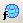 |
3Dパラメトリック関数グラフ作成 | 新レイアウトウィンドウ | |||
| 新規ノートウィンドウ | 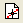 |
イメージのデジタイズ | |||
| 新規画像 | 開く | Ctrl + O | |||
| クラウドから開く | プロジェクト保存 | Ctrl + S | |||
| テンプレートの保存 | 再計算モード自動/最新または手動/保留 | ||||
| 自動更新/再計算を一時停止 | 
|
パーセントでの拡大・縮小 | |||
| 印刷 | Ctrl + P | 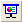 |
グラフのスライドショー | ||
| PowerPointにグラフを送る | 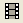 |
ビデオビルダを開く | |||
| リフレッシュ | F5 | 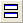 |
複製: | ||
| カスタムルーチン | プロジェクトエクスプローラ | Alt + 1 | |||
| オブジェクトマネージャ | Alt + 8 | 結果ログ | Alt + 2 | ||
| コマンドウィンドウ | Alt + 3 | 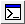 |
スクリプトウィンドウ | Shift + Alt + 3 | |
| コードビルダ | Alt + 4 | 列を追加 |
プロジェクトエクスプローラのフォルダとフォルダの内容を操作するための新しいツールバーフォルダとウィンドウが追加されました。複数のプロジェクトフォルダを操作する場合や、別々のフォルダにあるウィンドウを比較する際に役立ちます。
Originの初回起動時に、このツールバーがフローティング状態でOriginのワークスペースに追加表示されることがあります。その場合、タイトルバー部分をドラッグしてツールバー領域の空いている部分に配置したり、表示：ツールバーを選択して再初期化ボタンをクリックすることでツールバーの構成をリセットすることができます。

| ボタン | 説明 | ホットキー | ボタン | 説明 | ホットキー |
|---|---|---|---|---|---|
| 前のフォルダ | 次のフォルダ | ||||
| Seesaw（シーソー） | Ctrl + Alt + X | シーソー用にアクティブウィンドウのショートカットを追加 | Ctrl + Shift + F7 | ||
| 現フォルダからショートカットを追加 | 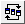 |
ウィンドウを整列（前回どおり） | |||
| アクティブウィンドウを固定 |
| ボタン | 説明 | ホットキー | ボタン | 説明 | ホットキー |
|---|---|---|---|---|---|
| インポートウィザード | 単一ASCIIのインポート | ||||
| 複数ASCIIのインポート | Excelのインポート | ||||
| 即時再インポート | Ctrl + 4 | 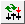 |
再インポート | ||
| クローンインポート | バッチ処理 | ||||
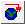 |
Web上のデータに接続 | 複数ファイルに接続 | |||
| 接続された全てのデータをインポート |
| ボタン | 説明 | ホットキー | ボタン | 説明 | ホットキー |
|---|---|---|---|---|---|
| 切り取り | Ctrl+X | コピー | Ctrl + C | ||
| 貼り付け | Ctrl + V | 元に戻す | Ctrl + Z | ||
| やり直し | Ctrl+Y |
| ボタン | 説明 | ホットキー | ボタン | 説明 | ホットキー |
|---|---|---|---|---|---|
| アンチエイリアスを有効化/無効化 | 再スケール | Ctrl + R | |||
| X軸の再スケール | Y軸の再スケール | ||||
| XY軸の再スケール | Z軸の再スケール | ||||
| X軸とY軸の交換 | 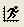 |
スピードモードの有効/無効化 | |||
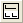 |
レイヤへ抽出 | グラフへ抽出 | |||
| 統合 | 新しい列/シート/ブックで複製... | ||||
| 下X軸左Y軸レイヤの追加 | 上X軸レイヤの追加 | ||||
| 右Y軸レイヤの追加 | 上X軸右Y軸レイヤの追加 | ||||
| インセットグラフの追加 | 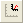 |
データ込みのインセットグラフの追加 | |||
| ズームイン | ズームアウト | ||||
| ページ全体 |
一般的なグラフタイプのみツールバーボタンを用意しています。作図メニューで全てのプロットタイプを確認できます。 |
| ボタン | 説明 | ボタン | 説明 |
|---|---|---|---|
| 線 | 水平階段 | ||
| 垂直階段 | スプライン接続 | ||
| 散布図 | グループ化散布図 - インデックスデータ | ||
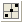 |
散布図（軸中心） | 列散布図 | |
| Yエラー | 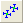 |
XYエラーバー | |
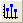 |
垂直ドロップライン | バブル | |
| カラーマップ | カラーマップバブル | ||
| 線+シンボル図 | 線系グラフ | ||
| 2点線分 | 3点線分 | ||
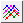 |
行データプロット | 列 | |
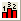 |
縦棒+ラベル | 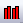 |
グループ縦棒グラフ - インデックスデータ |
| 棒 | 積み上げ縦棒 | ||
| 積み上げ横棒 | 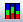 |
100% 積み上げ縦棒グラフ | |
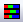 |
100% 積み上げ横棒グラフ | 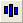 |
浮動縦棒 |
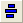 |
浮動横棒 | 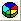 |
3Dカラー円グラフ |
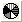 |
2D白黒円グラフ | 二重Y軸 | |
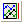 |
3Ys Y-YY | 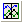 |
3Ys Y-Y-Y |
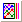 |
4Ys Y-YYY | 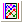 |
4Ys YY-YY |
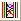 |
複数Y軸 | Yオフセット付き積上げ折れ線 | |
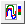 |
カラーマップ線系グラフ | ウォータフォール | |
| ウォータフォールY：カラーマッピング | 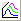 |
ウォータフォールZ：カラーマッピング | |
| 3Dウォータフォール | 3DウォータフォールY：カラーマッピング | ||
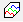 |
3DウォータフォールZ：カラーマッピング | 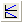 |
Vertical 2 Panel |
| 水平2区分 | 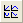 |
4区分 | |
| 9区分 | 積み上げ | ||
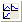 |
ラベルから複数パネルを一括作成 | 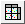 |
トレリスプロット |
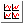 |
クラスタープロット | ボックスチャート | |
| ボックス付きバイオリン | グループ化ボックスチャート-インデックスデータ | ||
| グループ化ボックスチャート-素データ | 区間プロット | ||
| ヒストグラム | ヒストグラム+確率 | ||
| 複数区分ヒストグラム | ヒストグラム投影 | ||
| ボックスチャート投影 | 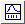 |
分布+ラグ | |
| 2Dカーネル密度 | 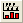 |
QCチャート(X-bar R) | |
| パレート図-ビン化データ | パレート図-素データ | ||
| 散布図行列 | 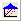 |
確率プロット | |
| Q-Qプロット | 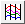 |
平行座標プロット | |
| 面積 | 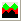 |
積み上げ面積 | |
| 色付き面積 | ズーム | ||
| θ(X) r(Y)極座標グラフ | r(X) θ(Y)極座標グラフ | ||
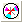 |
ウィンドローズ-ビン化データ | 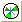 |
ウィンドローズ-素データ |
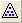 |
三点グラフ | トリリニアダイアグラム | |
| スミスチャート | レーダー | ||
| XYAM型ベクトル | XYXY型ベクトル | ||
| 株価チャート | ローソク足チャート | ||
| 株価チャート：OHLC | 株価チャート：OHLC-出来高 | ||
| 株価折れ線チャート | 滝グラフ | ||
| テンプレートライブラリ |
| ボタン | 説明 | ホットキー | ボタン | 説明 | ホットキー |
|---|---|---|---|---|---|
| カラースケールを追加 | バブルスケールを追加 | ||||
| ボックススケール追加 | 凡例を再構成 | Ctrl+L | |||
| アスタリスクブラケットの追加 | 丸括弧のアスタリスクブラケットの追加 | ||||
| 波括弧のアスタリスクブラケットの追加 | XYスケールを追加 | ||||
| 日時スタンプ | プロジェクトパス | ||||
| 新規リンクテーブル |

| ボタン | 説明 | ボタン | 説明 |
|---|---|---|---|
| 反時計回りに回転 | 時計回りに回転 | ||
| 左に傾斜 | 右に傾斜 | ||
| 下に傾斜 | 上に傾斜 | ||
| 視野拡大 | 視野縮小 | ||
| フレームに合わせる | 回転のリセット | ||
| リセット | 回転 | ||
| 回転角 |
| ボタン | 説明 | ホットキー | ボタン | 説明 | ホットキー |
|---|---|---|---|---|---|
| 列の統計 | 行の統計 | ||||
| ソート | 列値の設定 | Ctrl + Q | |||
| 全ての列値の設定 | Ctrl + F5 | 行番号値を列に設定 | |||
| 一様乱数を列に設定 | 正規乱数を列に設定 | ||||
| データフィルタを追加または削除 | データフィルタを有効にする/無効にする | ||||
| データフィルタの再適用 |
| ボタン | 説明 | ボタン | 説明 |
|---|---|---|---|
| X列 | Y列 | ||
| Z列 | Yエラーバー | ||
| ラベル列 | 無属性として設定 | ||
| グループ列 | サブジェクト列 | ||
| 始めへ移動 | 左に移動 | ||
| 右に移動 | 終わりへ移動 | ||
| 列の交換 | スパークラインの追加 |
このツールバーはデフォルトで非表示になっています。表示するには、表示：ツールバーメニューを選択します。
| ボタン | 説明 | ボタン | 説明 |
|---|---|---|---|
| グラフ追加 | ワークシート追加 |

| ボタン | 説明 | ボタン | 説明 |
|---|---|---|---|
| 範囲のマスク | 範囲のマスク取り外し | ||
| マスクカラー変更 | マスクポイントの表示/非表示 | ||
| マスクの逆転 | マスク操作の利用可/不可 |

| ボタン | 説明 | ボタン | 説明 |
|---|---|---|---|
| 左 | 右 | ||
| 上 | 下 | ||
| 垂直 | 水平 | ||
| 同じ幅 | 同じ高さ | ||
| グループ化 | 非グループ化 | ||
| 選択されたレイヤ/描画オブジェクトを垂直方向に 等間隔に配置する |
選択されたレイヤ/描画オブジェクトを水平方向に 等間隔に配置する | ||
| 最前面へ移す | 最背面へ移す | ||
| 前面へ | 背面へ | ||
| プロット前面に移す | プロット後部に移す |
このツールバーはデフォルトで非表示になっています。表示するには、表示：ツールバーメニューを選択します。
| ボタン | 説明 | ボタン | 説明 |
|---|---|---|---|
| 水平方向に揃える | 垂直方向に揃える | ||
| 広い矢先 | 狭い矢先 | ||
| 長い矢先 | 短い矢先 |

| ボタン | 説明 | ホットキー | ボタン | 説明 | ホットキー |
|---|---|---|---|---|---|
| 塗り色 | 線/境界色 | ||||
| ライティング制御ダイアログ | パレット | ||||
| 線/境界のスタイル | 線/境界の太さ | ||||
| 塗りつぶしパターン | 塗りつぶしパターンの幅 | ||||
| パターン色 | 境界のクリア | ||||
| 左境界 | 上境界 | ||||
| 右境界 | 下境界 | ||||
| フレーム境界 | 水平境界内 | ||||
| 垂直境界内 | 水平垂直境界内 | ||||
| すべての水平境界内 | すべての垂直境界内 | ||||
| 全境界 | セルの統合 | Ctrl + R |


| ボタン | 説明 |
|---|---|
| 自動更新/再計算を一時停止 |

| ボタン | 説明 | ボタン | 説明 |
|---|---|---|---|
| SQLエディタを開く | クエリビルダを開く | ||
| ODQファイルのロード | インポートプレビュー | ||
| データのインポート | SQLの削除 |
| ボタン | 説明 | ホットキー | ボタン | 説明 | ホットキー |
|---|---|---|---|---|---|
| データマーカーの追加 | Ctrl+Alt+M | データマーカーの消去 | Ctrl+Alt+N | ||
| 解析マーカーのサイズ変更 | 解析マーカーの表示/非表示 | ||||
| 錠前アイコンの位置変更 |